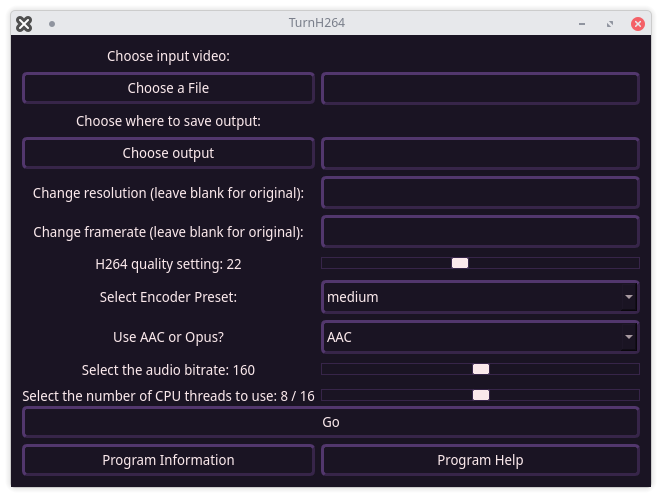
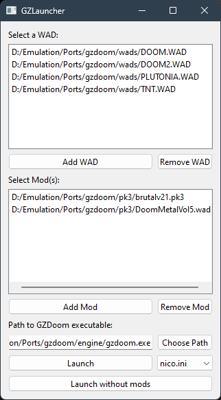
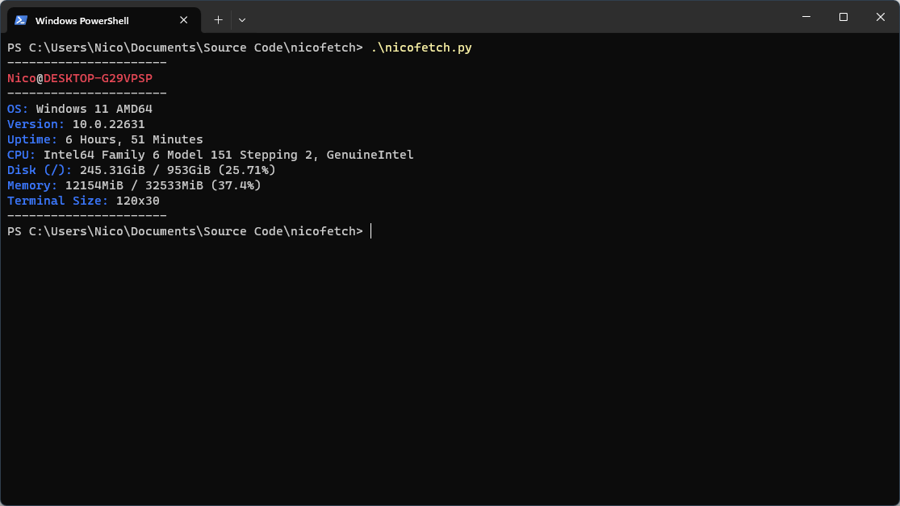

TurnH264
TurnH264 was a simple project I created to learn Python and Qt GUI development, it a graphical wraper for H264 conversion with ffmpeg.THIS SHOULD NOT BE USED, it was just a learning project, but if you're interested in seeing some of my earliest code you can do so here.

GZLauncher
GZLauncher is an alternative launcher to the default one in GZDoom that makes it easier to load different WADs and PK3s with multiple configs. It is programmed in a similar way to TurnH264, albeit much cleaner x3. This is also one of the project I used to learn pull requests (Thanks, Zeptofine!)I usually update this whenever there's a feature I would find useful, and I'd say this is suitable for day-to-day use if you'd like to. You can get it here.

nicofetch
Minimal fetch script, kinda like pfetch. But it's written in Python and works on Linux and Windows (and maybe macOS but I can't test) You can take a look at it here. I'd like to make something similar again once I get around to learning a new language, maybe I'll do it in Rust. 
Helium License
Not necessarily code, but related. Helium is my own license, it's written short and simple like the MIT License but it's far less permissive. Basically you can do anything except sell a product containing the Helium licensed code, nor can you change the license in derivitives/forks. If that's something that interests you, it's available right here.